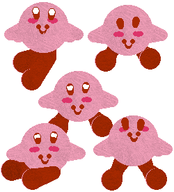
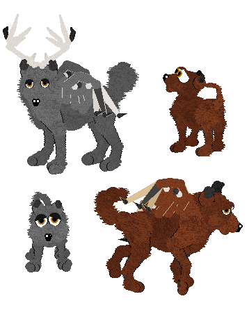

My External-LNZ breedz
~~~~~~~~~~~~~~~~~~~~~~~~~~~~~
LNZ breedfiles are simply overwriting breedfiles which go in a
ptzfilesdogxx or ptzfilescatxx directory instead of a resourcedogz or
resourcecatz directory. Once you have my "For Easy LNZ" packages for the
relevant original breedz installed, your downloaded LNZ hexie will work just
like any DOG or CAT hexie. Breeders will find that breedz stored in the form
of .LNZ files are as easy to manage and keep track of as any overwriting
.DOG or .CAT breed, and have the advantage of being a lot smaller. These LNZ
files will work with those packages in any of Petz 3, Petz 4 or Petz
5.
For details of where the files go in your game, click here
Hexers, feel free to use the .lnz files if you wish for your own breedz, but
I would appreciate an acknowledgement of my work.
For the People breed, go to the People LNZ breed page
For my older LNZ breedz, go here
Another special request, rather late in appearing --
thanks for your patience, hypershad0w!

Here are the .LNZ files, for use with my
external-lnz Calico packages which you can get from the "For Easy LNZ"
pages; it will of course overwrite the normal Calico's .LNZ.
Go to Miranda's
Kirby page to download some fantastic variations for Catz 3, 4 and
5!
Note that Kirby, like Chao, tends to kick the food away. No problem, both he
and Chao can eat treats and drink from the bottles, so feed them that
way.
A special request for Asokei...

Here are the .LNZ files, for use with my
external-lnz Great Dane packages which you can get from the "For Easy LNZ"
pages; it will of course overwrite the normal Great Dane's .LNZ.
.